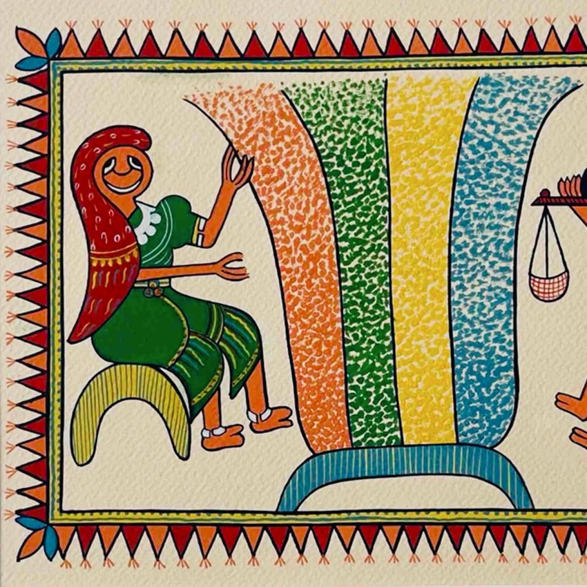

Tribal art feels like life expressed in its purest form. There’s no attempt to impress or decorate—it’s simply people expressing their world, beliefs, and emotions. The romance here is raw and honest. It’s about everyday life—dancing, hunting, rituals, and nature. There’s a strong sense of community, where art is not individual but shared. It reflects a world where humans live closely with nature, and everything—animals, trees, spirits—feels connected.
Tribal art in Madhya Pradesh comes from various indigenous communities like the Bhil tribe, Gond tribe, and others. • Practiced for centuries as part of daily and ritual life • Painted on walls, floors, and objects • Used during festivals, marriages, and ceremonies Unlike classical art, tribal art was never meant for galleries—it was a living tradition, deeply connected to survival, belief, and environment.
Tribal art varies across communities but shares common features: • Use of Natural Materials Colors made from मिट्टी (mud), charcoal, leaves, and minerals • Simple Forms Human and animal figures are basic but expressive • Geometric & Repetitive Patterns Lines, dots, and shapes create rhythm • Symbolism • Animals → strength, survival • Trees → life and growth • Patterns → protection and prosperity • Wall-Based Art Often painted directly on homes rather than canvas
Tribal art is created by members of the community themselves, not professional artists. • Passed down through generations orally and visually • Often created by women in the household • Art is part of life—not a separate profession Each tribe has its own style, making tribal art diverse and deeply cultural.